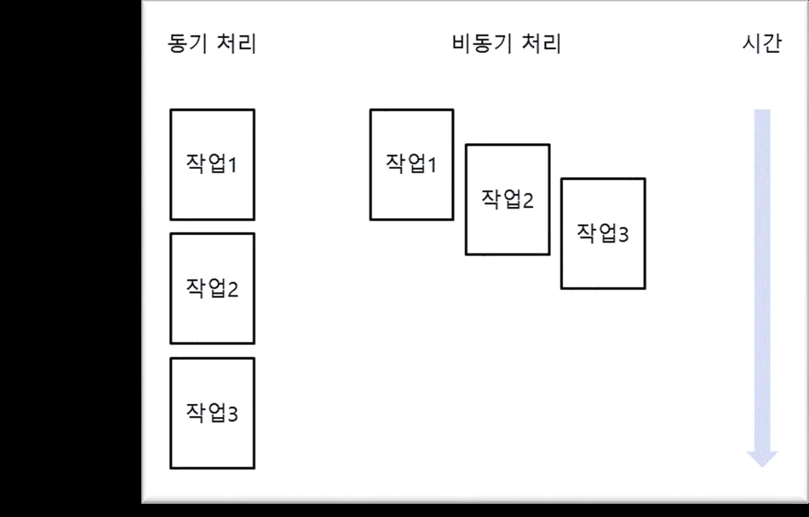
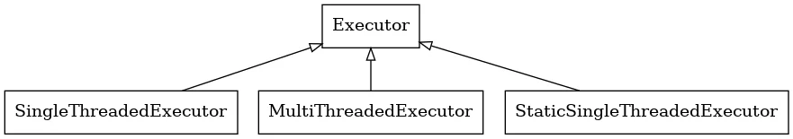

ROS2 입문 5차시 - rclpy 이해¶
rclpy 이해¶
rclpy 정의¶
- ROS2의Python 클라이언트 라이브러리로, 노드를 만들고 통신할 수 있도록 돕는 핵심 요소
- C++로 작성된ROS2의코어 라이브러리(rcl)를Python 환경에서 활용할 수 있도록 래핑 (wrapping)한 것이 특징
- 사용자들은Python의 간결한 문법과 다양한 라이브러리를ROS2 기반 시스템에 쉽게 통합
rclpy 구성요소¶
- 노드(Node) ROS2 시스템의 기본 실행 단위. 노드는 각각 고유의 이름을 가지며, pub/sub, service/client 등을 통한 통신을 담당
- 퍼블리셔(Publisher)와서브스크라이버 (Subscriber) 퍼블리셔는 데이터 토픽을 통해 전송하고, 서브 스크라이버는 이를 수신. rclpy에서는 간단한 API로pub/sub를설정
- 서비스(Service)와 클라이언트(Client) 서비스는 요청-응답 방식의 통신을 처리하며, 클라이언트는 특정 요청을 보내고 응답 대기
- 액션(Action) 긴 시간 동안 실행되는 작업을 요청하고 그 결 과를 받을 수 있는 기능. 주로Motion Planning 과 같은 작업에 사용
- 파라미터 서버(Parameter Server) ROS2 시스템에서 전역적 혹은 로컬 파라미터를 설정하고 가져올 수 있는 시스템
노드의 구현 및 실행 흐름 Multi Thread Multi Thread 지원
고급사용법¶
- 멀티 스레드 지원
- rclpy는 멀티 스레드 실행 지원 가능
- 예를 들어, 서비스와 퍼블리셔가 동일한 노드 내에서 동시에 작동하는 경우, MultiThreadedExecutor를 사용 가능
소스코드 참조
이 코드의 전체 내용은 Calculator 프로젝트 전체 소스코드 페이지에서 확인할 수 있습니다.
Multi Thread 비동기 서비스 호출
고급사용법¶
- 비동기 서비스 호출
- rclpy는asyncio와 통합 가능
- 이를 통해 비동기적으로 서비스를 호출하고 처리

Multi Thread Multi Thread 지원
Best practice¶
- 노드 이름 관리
- 노드 이름은 고유해야하므로, 노드를 생성할 때는 시스템 내 다른 노드들과 충돌하지 않도록 이름을 신중히 설정
- 예를 들어, 서비스와 퍼블리셔가 동일한 노드 내에서 동시에 작동하는 경우, MultiThreadedExecutor를 사용 가능
- 타이머 주기 관리
- 타이머 콜백(Callback) 주기는 너무 짧게 설정하지 않도록 주의
- 지나치게 빠른 주기는CPU부하의 과도한 증가의 원인
- 에러 핸들 링
- ROS2 환경은 네트워크 및 하드웨어 상태에 따라 불안정할 수 있으므로, 예외 상황에 대한 철저한 에러 핸들 링이 필수
Multi Thread 최적화
최적화팁¶
- 토픽QoS 설정
- 네트워크 환경이나 메시지의 중요도에 따라QoS(Quality of Service) 설정을 맞춰야함
- 예를 들어, 메시지 유실이 치명적이지 않은 센서 데이터의 경우Best Effort 방식을 사용할 수 있음
- 파라미터 최적화
- 파라미터 서버를 활용해, 노드의 설정 값을 유연하게 바꾸면서 성능 튜닝 가능
Executor Executor 란? - Executor란? - ROS2에서 콜백을 실행하는 구성 요소 - 메시지 수신, 서비스 요청 처리, 타이머 이벤트 등 다양한 이벤트에 대한 응답 실행 - 역할 - 노드가 구독하는 데이터나 이벤트를 적절한 콜백으로 처리하여 메시지의QoS를지원(메시지 전 달의 신뢰성, 우선순위, 지속성을 설정 가능) - 시스템의 비동기 처리와 효율성 보장 - 유형 - SingleThreadExecutor : 단 일 스레드에서 콜백을 순차적으로 처리 - MultiThreadExecutor : 여러 스레드에서 콜백을 병렬적으로 처리
Executor
ROS2 계층구조¶
상호 작용을 추상화
-
rmw adapter : RMW와 미들 웨어를 연결하는 중간 계층 역할. 이를 통해ROS2는특정DDS 구현 체에 종속되지 않고, 다양한 미들 웨어를 지원할 수 있는 유연성을 가짐
-
Middleware : 실제 메시지 전달과QoS 설정을 처리하는 계층
- 미들웨어: 분산 네트워크에서 애플리케이션 또는 구성 요소 간에 하나 이상의 종류의 통신 또는 연결을 가능하게하는 소프트웨어. ROS2에서는 노드 간의 메시지 송수신 및 이벤트 처리를 담당

Executor Executor 동작 과정
동작과정¶
정에서 미들 웨어에 저장된 메시지가 클라이언트로 전달됨
- execute : 메시지 처리를 위한 콜백 함수(onGoal, nextCmd, processOdom) 실행

Executor Executor의종류
SingleThreadedExecutor : 단일스레드에서콜백을실행¶
- 하나의 스레드만 사용하여 이벤트를 처리하므로, 콜백이 완료될 때까지 다른 작업을 처리할 수 없음
- 주로 처리 속도가 중요한 것이 아니거나, 콜백이 충돌하지 않도록하기 위해 단일 스레드 환경에서 사용
StaticSingleThreadedExecutor : 단일스레드에서정적으로콜백을실행¶
- 정적 단일스레 드 실행자는 구독, 타이머, 서비스 서버, 액션 서버 등의 노드 구조를 스캔하는 런 타임 비용을 최적화
- 노드가 추가될 때 콜백 스캔을 한 번만 수행되며, 다른 두Executer는 이러한 변화를 정기적으로 스캔
- 정적 단일스레 드 실행자는 초기화 중에 모든 구독, 타이머 등을 생성하는 노드와 함께 사용해야함

Executor Multi Thread Executor
MultiThreadedExecutor : 여러스레드에서콜백을병렬로실행¶
- 여러 스레드가 동시에 실행되기 때문에 복잡한 작업이나 멀티태스킹 환경에서 유리
- 그러나 다중 스레드 간의 자원 경쟁이나 동기화 문제가 발생할 수 있으므로, 적절한 동기화 처리(locking) 필요
Executor Executor 기본 동작
Executor 동작순서¶
처리하고, MultiThreadedExecutor는 병렬로 처리
Executor
Executor 사용예¶
- SingleThreadedExecutor를 사용하는 간단한 퍼블리셔 노 드
- 이벤트는1초마다 발생하여 메시지를 퍼블리싱
Executor
Executor 와spin 차이점¶
Executor spin() 역할 콜백 관리 및 실행 이벤트루프 실행 설명 노드에 포함된 콜백(토픽, 서비스, 타이머 등)을 관리하고, 이벤트가 발생하면 적절한 콜백을 실행하는 역할 수행 SingleThreadedExecutor와MultiThreadedExecutor 같은 다양한 종류가 있으며, 콜백을 실행하는 방식에 따라 동작 방식이 달라짐 Executor가이벤트를 처리하는 루프를 실행 spin()이 호출되면 노 드는 콜백이 발생하기를 기다리며, 이벤트가 감지될 때 콜백을 실행 Executor가동작할 수 있는 환경을 유지하는 루프이며, 명시적으로 종료하거나 프로그램이 종료될 때까지 계속 실행
Executor
Executor 와spin 차이점¶
- 여기서executor는노드에서 발생하는 콜백을 관리하고 실행하는 역할 수행
- Executor.spin()은 노 드의 이벤트루프를 돌려서 콜백이 발생할 때 처리되도록함
Executor Executor 와spin 의관계
관계¶
- Executor는 콜백을 처리하는"관리자"이고, spin()은해당Executor가 콜백을 계속해서 처리하도록하는"루프"
- Executor는 콜백을 실행하는 규칙과 방식을 정의하고, spin()은 그 규칙에 따라Executor 가동작하도록해 주는 실행 메커니즘 SingleThreadedExecutor + spin(): 한 번에 하나의 콜백만 처리 MultiThreadedExecutor + spin(): 여러 콜백을 동시에 처리
멀티스레드와의연관성¶
- spin()을 사용하면Executor가 콜백을 처리하는 동안 계속해서 대기하지만, MultiThreadedExecutor를 사용하면 여러 콜백을 동시에 병렬로 처리할 수 있음
- 이때도spin()을 호출하여 이벤트루프가 유지되지만, 여러 스레드가 동시에 동작하면 서 여러 콜백을 병렬 처리 가능
Executor 결론
Conclusion¶
- rclpy는ROS2에서Python을 활용해 로봇 시스템을 신속하게 구축할 수 있는 강력한 도구
- ROS2의 유연한 통신 모델과 결합하면 복잡한 로봇 애플리케이션을 손쉽게 설계하고 확장 가능
- Executor와spin()은 서로다는 개념이지만, 함께 사용되어ROS2 시스템에서 콜백을 효율적으로 관리하고 실행
Jupyter Notebooks¶
ServiceClientTest¶

Code Examples¶
py_srvcli/¶
py_srvcli/py_srvcli/__init__.py¶
py_srvcli/py_srvcli/client_member_function.py¶
import sys
from example_interfaces.srv import AddTwoInts
import rclpy
from rclpy.node import Node
class MinimalClientAsync(Node):
def __init__(self):
super().__init__("minimal_client_async")
self.cli = self.create_client(AddTwoInts, "add_two_ints")
while not self.cli.wait_for_service(timeout_sec=1.0):
self.get_logger().info("service not available, waiting again...")
self.req = AddTwoInts.Request()
def send_request(self, a, b):
self.req.a = a
self.req.b = b
return self.cli.call_async(self.req)
def main():
rclpy.init()
minimal_client = MinimalClientAsync()
future = minimal_client.send_request(int(sys.argv[1]), int(sys.argv[2]))
rclpy.spin_until_future_complete(minimal_client, future)
response = future.result()
minimal_client.get_logger().info(
"Result of add_two_ints: for %d + %d = %d"
% (int(sys.argv[1]), int(sys.argv[2]), int(response.sum))
)
minimal_client.destroy_node()
rclpy.shutdown()
py_srvcli/py_srvcli/service_member_function.py¶
from example_interfaces.srv import AddTwoInts
import rclpy
from rclpy.node import Node
class MinimalService(Node):
def __init__(self):
super().__init__("minimal_service")
self.srv = self.create_service(
AddTwoInts, "add_two_ints", self.add_two_ints_callback
)
def add_two_ints_callback(self, request, response):
response.sum = request.a + request.b
self.get_logger().info("Incoming request\na: %d b: %d" % (request.a, request.b))
return response
def main():
rclpy.init()
minimal_service = MinimalService()
rclpy.spin(minimal_service)
rclpy.shutdown()
if __name__ == "__main__":
main()